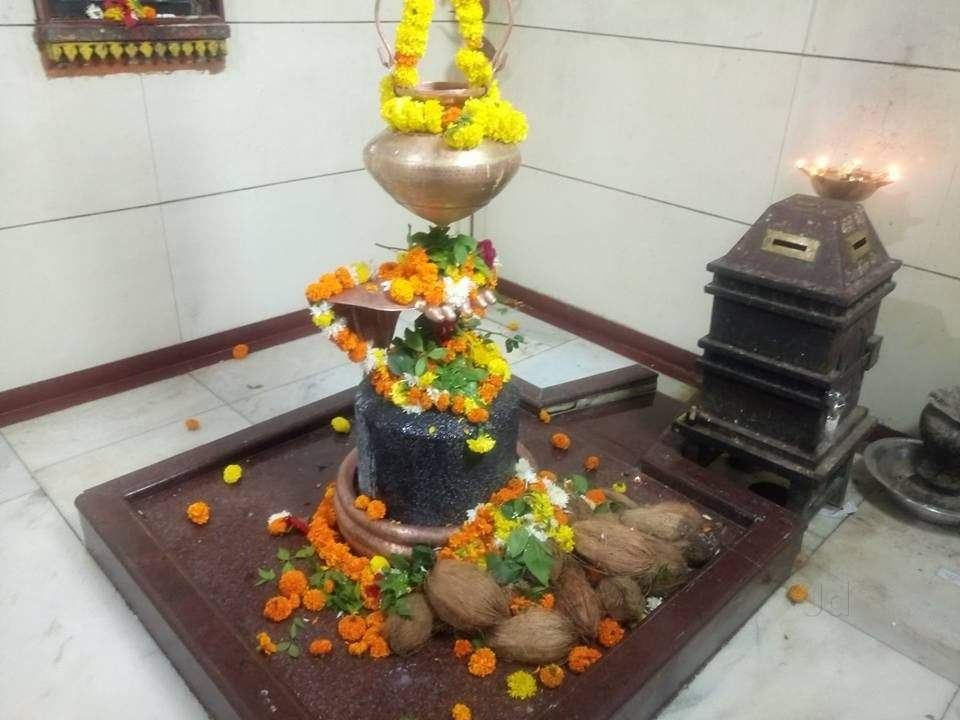
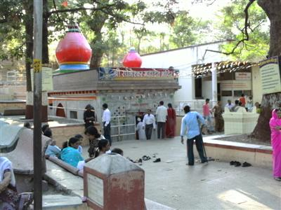

Someshwar is on the way to Gangapur dam, tourists are fascinated by the beautiful nature spot called Someshwar
. There is a temple of Lord Shiva and Lord Hanuman on the banks of the river Godavari. The area is covered with greenery all over, with a pleasant climate. Tourists can take pleasure of swimming and boating in the river.Someshwar has been a favourite location for many a filmshootings. On the way to Someshwar, there is a village named Anandwalli. It is so named because Peshwas – Anandibai and Raghobadada, lived there for some time. The temple – Navasha Ganpati was built by them. Someshwar is mainly famous for the Dudhsagarwaterfall
. In the rainy season, the whole surrounding of the temple gets covered by greenery. At that time, the seenary of waterfall is really awesome.